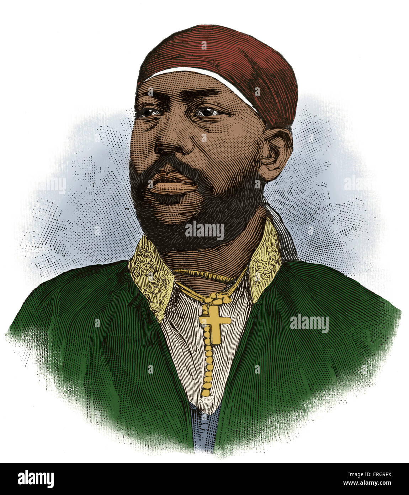
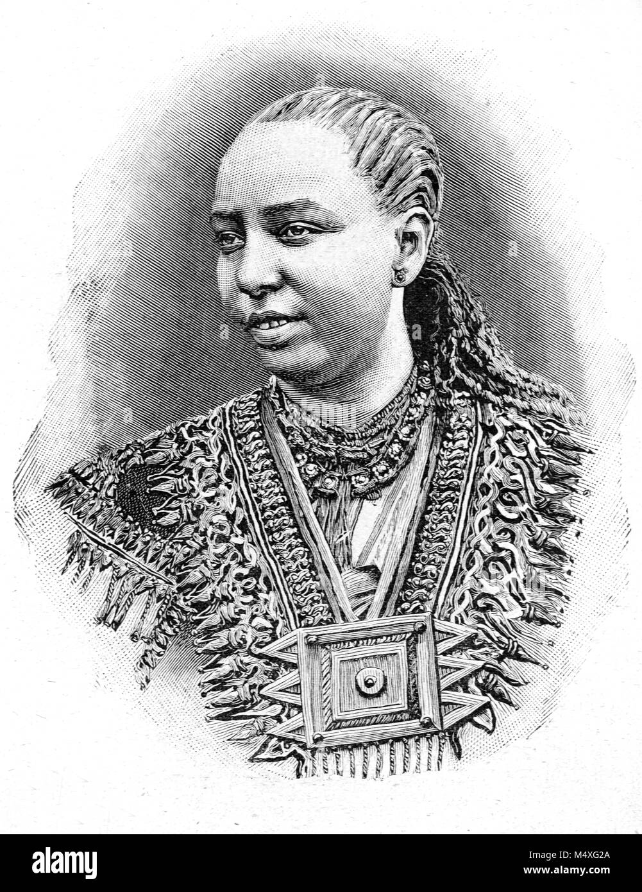
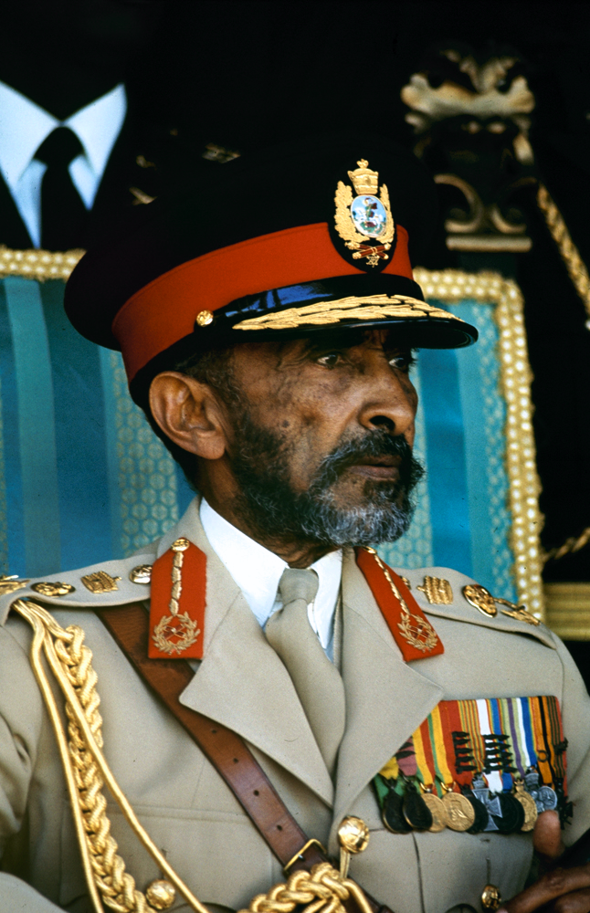
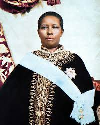

Emperor Menelik II
He led Ethiopia to victory at the Battle of Adwa in 1896 against Italy. He modernized Ethiopia and built the first hospital and school.

Empress Taytu
A strong leader who helped plan the strategy at Adwa. She founded Addis Ababa and was known for her intelligence and bravery.

Emperor Haile Selassie
The last emperor of Ethiopia. He helped create the Organization of African Unity and modernized Ethiopia's education system.

Empress Zewditu
Ethiopia's first female head of state. She ruled during a time of change and was known for her kindness and devotion to the church.